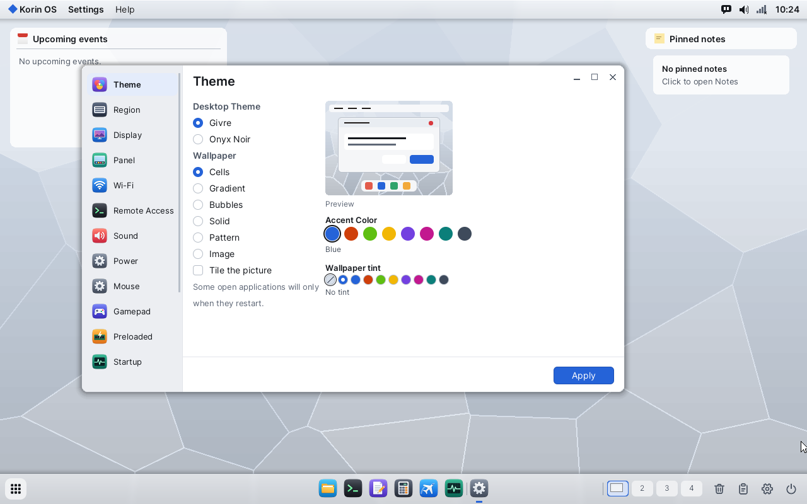
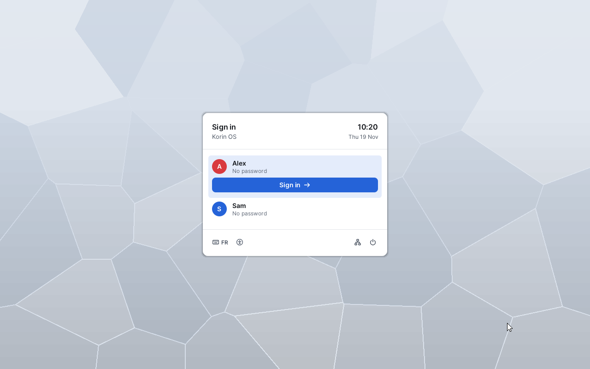
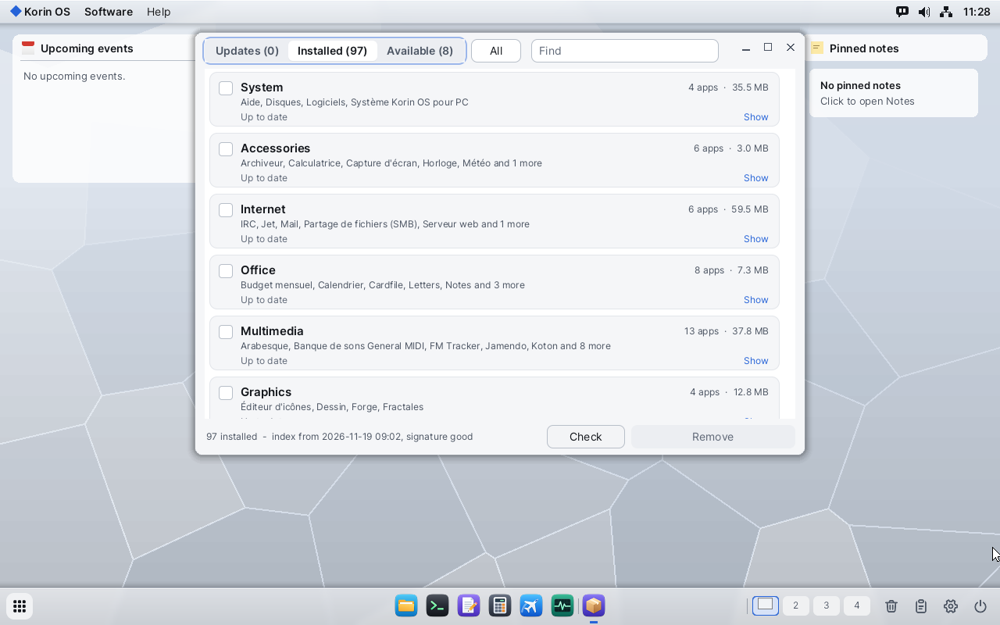
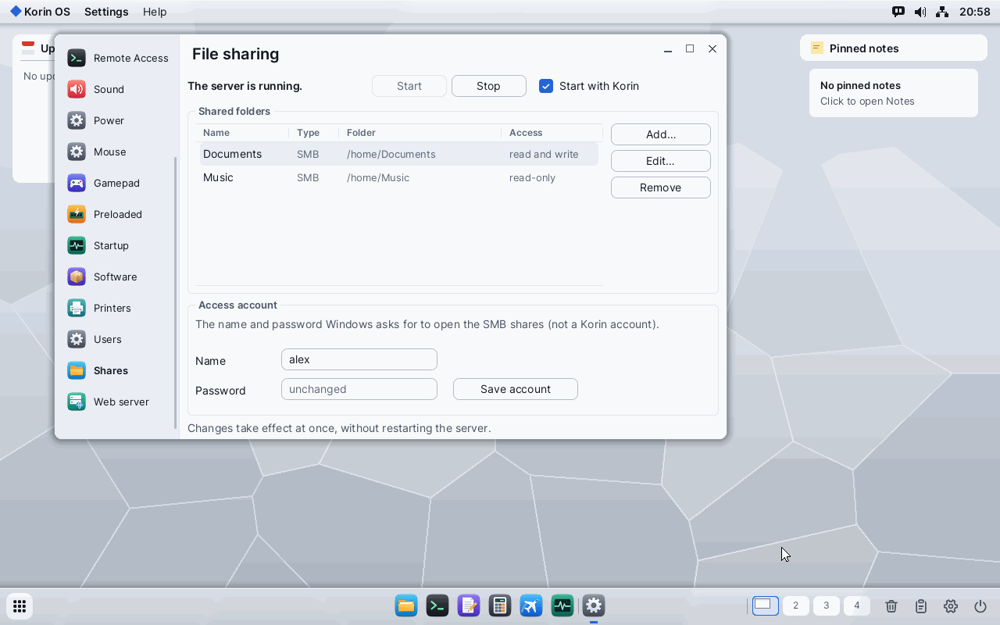
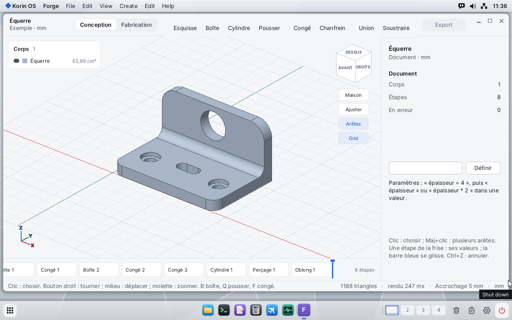

Features
The desktop, accounts, software management and the apps that come with Korin OS. All screenshots on this page were taken under QEMU from a PC build of 19 November 2026, without a GPU.
Elegant, the desktop
Elegant is Korin's window server and desktop shell. It composes every window, draws the menu bar of the active app at the top and a panel at the bottom.
- Launcher with categories and search
- Four workspaces, minimised windows in the panel
- Desktop widgets: upcoming events, pinned notes
- Two themes, Givre (light) and Onyx Noir (dark), eight accent colours, several wallpapers
- A full-screen “pocket” mode for small screens
- Built-in help with a guide for each app

Accounts and sign-in
Each person has an account and a home folder. With a single account and no password, Korin signs in automatically, like before.
- Sign-in screen with the list of accounts and their picture
- Passwords stored as salted PBKDF2-SHA-256 hashes, readable only by the system
sudoand a confirmation card when an app needs administrator rights, remembered for five minutesuseradd,userdel,usermodand a Users page in Settings- Log out from the shut-down menu
Path access rules are still in “log” mode: refusals are recorded, not yet enforced. Lock screen and fast user switching are planned.

Software, with signed packages
Apps, kits, fonts and the system itself are packages. The Software app groups them by category, installs and removes them, and applies updates.
- Each repository index is signed (ECDSA P-256); Korin refuses an index whose signature is wrong
pkgon the command line,pkgdas a system service- A repository for PC (113 packages) and one for the Raspberry Pi, both on GitHub Pages

Files on the network
Network shares and Google Drive appear in the file tree under /net, like any other
volume. Any program can open them, from cp in the Terminal to Files or Letters. On the PC, share
passwords go to the system keyvault; for Drive, Korin keeps only an encrypted sign-in token.
Windows shares (SMB)
In Files, Volume › Connect to
server… (Ctrl+K) takes \\host\share or smb://host/share and a user name. The share is
mounted in /net and comes back at every start. SMB 2 and 3, with signing and SMB3
encryption.
QEMU
Sharing your folders
smbd shares folders
with Windows, macOS and Linux (\\korin\Korin). Settings › Shares starts it,
lists the shared folders, read-only or not, and the account Windows asks for.
QEMU used from the Windows 11 Explorer
Google Drive
In Files, Volume › Connect to Google
Drive…: sign in to Google in Jet once, and the Drive is mounted in /net. Files are read as a
stream with read-ahead, written back to Drive on close, and deletions go to the Drive trash. Google
Docs, Sheets and Slides are hidden for now.
hardware ZBook, against the real Google Drive

\\korin, and the account it asks for.Apps
Most apps are written for Korin on UIKit and follow the desktop theme. Some are ports, such as WebKit, Godot or MuPDF. A few apps only exist on one kind of machine; that is noted.
Internet
- Jet: web browser on WebKit, with WebGL
- Mail, IRC, Telegram
- Courier: HTTP client for testing APIs
- WebStudio: website editor with live preview (PC)
- Web server (
webd), Google sign-in (OAuth)
Office
- Letters: word processor, RTF, DOCX, ODT
- Sheet (XLSX, ODS), Slides (PPTX, ODP)
- PDF viewer, Notes, Calendar, Cardfile
- Budget: monthly budget and balances
- Printing to PDF or IPP printers
Music and video
- Jamendo: free Creative Commons music, radios by genre (PC)
- Spotify: Premium accounts, through librespot (PC, new)
- Media Player: music library, WebM, MKV and MP4 (VP8, VP9, AV1)
- Koton composition studio, FM Tracker, Arabesque
- Recorder (WAV, MP3, Opus), Mixer, Piano
Graphics and CAD
- Forge: parametric CAD on Open CASCADE (PC)
- Paint, Photos, Image Viewer (PNG, JPEG, GIF, WebP…)
- Icon Editor, Fractals
Games and emulators
- Game Library with emulators for NES, Game Boy, SNES, GBA, N64, DS and GameCube
- Solitaire, FreeCell, Tetris, 2048, Arkanoid, Invaders, Pinball, Snake…
- Cosmo Zoom!; Asteroids and Parking Jam, made with Godot (PC)
Assistants
- PocketQI: ask questions about the system, with spoken answers
- Vibe, Mistral's coding agent, running in Korin
- Claude, Anthropic's coding agent, with your API key
System
- Files, Terminal (bash), Editor
- Settings, Software, Disks, Task Manager
- Archiver (ZIP, tar, gzip), Screenshot, Weather, Clock
Learning and making
- QBasic and QBStudio
- Turtle Quest: learn BASIC in 48 levels
- GPIO Lab: drive the Pi's pins from BASIC (Pi or simulator)
- Circuits: a logic gate puzzle
Development
- Studio: C# IDE in Avalonia, with a form designer
- Godot 4.7 editor (PC)
- GCC, FASM, FreeBASIC, .NET, Python, git
- More on the developer page
Screens
Captured under QEMU (x86-64, four cores, no GPU) with the network through QEMU's user mode.


